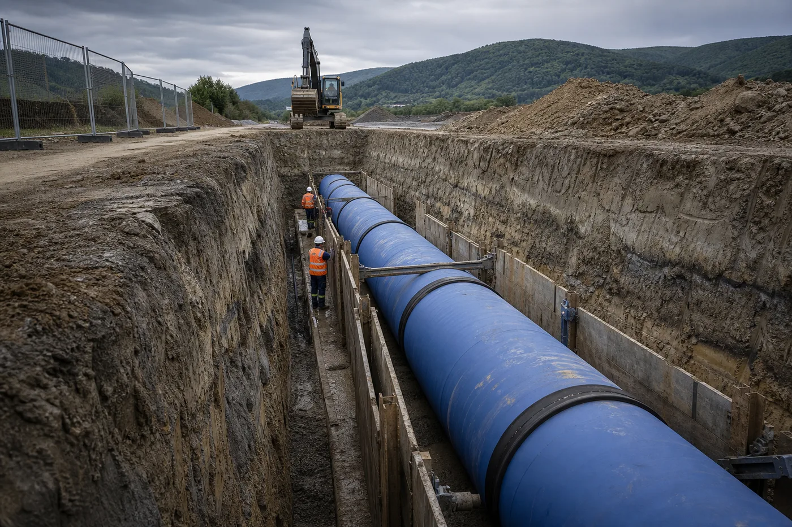
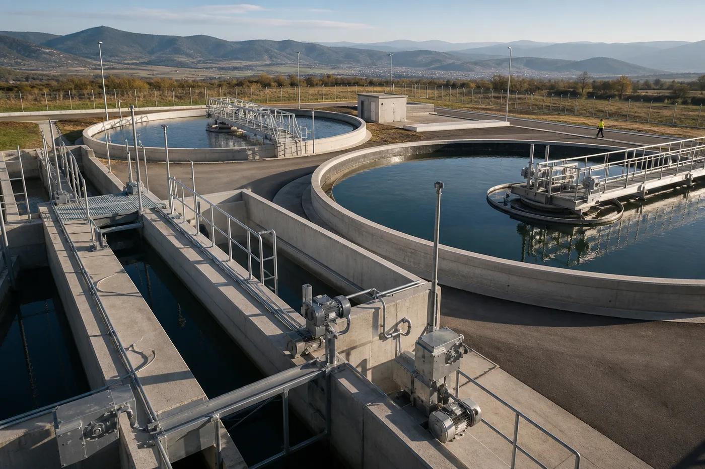
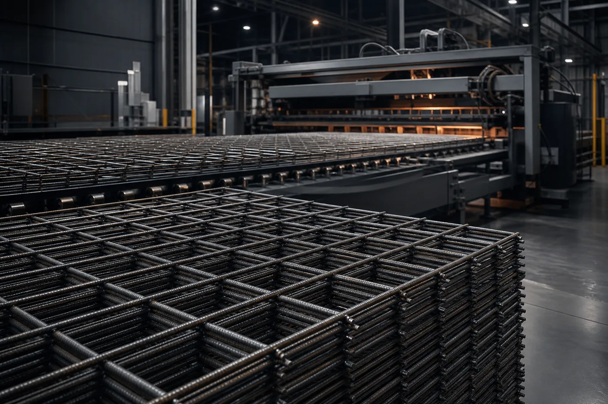
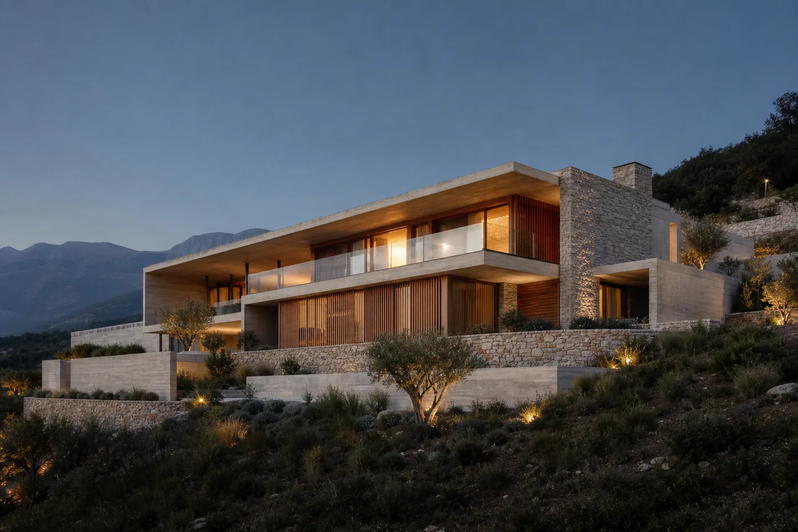

Vizion & inxhinieri
Lexojmë terrenin, objektivin dhe riskun përpara se të lëvizë makina e parë.
INXHINIERI QË LËVIZ PËRPARA
Nga rrjetet jetike të ujit te strukturat që formojnë qytetet — Auremont bashkon inxhinierinë, prodhimin dhe zbatimin në një standard të vetëm.
Diskuto projektin↗UJËSJELLËS
UJËRA TË ZEZA
NDËRTIM
NDËRTUES ME PËRGJEGJËSI
Auremont është partner zbatimi për projekte ku saktësia teknike, ritmi i punës dhe jetëgjatësia nuk negociohen. Nga infrastruktura nëntokësore deri te ndërtesa e përfunduar, çdo fazë drejtohet me përgjegjësi të matshme.
Zbulo ekspertizën ↘ÇFARË
BËJMË
EKSPERTIZË E INTEGRUAR
Kapacitete të bashkuara nën një drejtim të vetëm, nga punimet nëntokësore te prodhimi dhe objekti i përfunduar.

01INFRASTRUKTURË

02SISTEME MJEDISORE

03PRODHIM INDUSTRIAL

04NDËRTIM I PLOTË
FUSHAT E
PROJEKTEVE
Një portofol i ndërtuar rreth nevojave reale të komunitetit, industrisë dhe zhvillimit privat.
SI PUNOJMË
Çdo vendim mbështetet në matje, dokumentim dhe plan pune. Problemet zgjidhen përpara se të kthehen në kosto.
Standardet e sigurisë janë pjesë e ritmit të punës — në terren, në fabrikë dhe në çdo fazë të kantierit.
Afatet, progresi dhe vendimet komunikohen qartë. Klienti e di gjithmonë ku ndodhet projekti dhe çfarë vjen më pas.
Ne projektojmë dhe ndërtojmë për ciklin e plotë të përdorimit, jo vetëm për ditën e inaugurimit.
KU NA
GJENI
AUREMONT NË TERREN
Vizitoni vendndodhjen tonë të prodhimit ose hapeni direkt në Google Maps për udhëzime.
PROJEKTI I RADHËS
Na tregoni objektivin. Ne do t’ju përgjigjemi me pyetjet e duhura dhe një rrugë të qartë përpara.